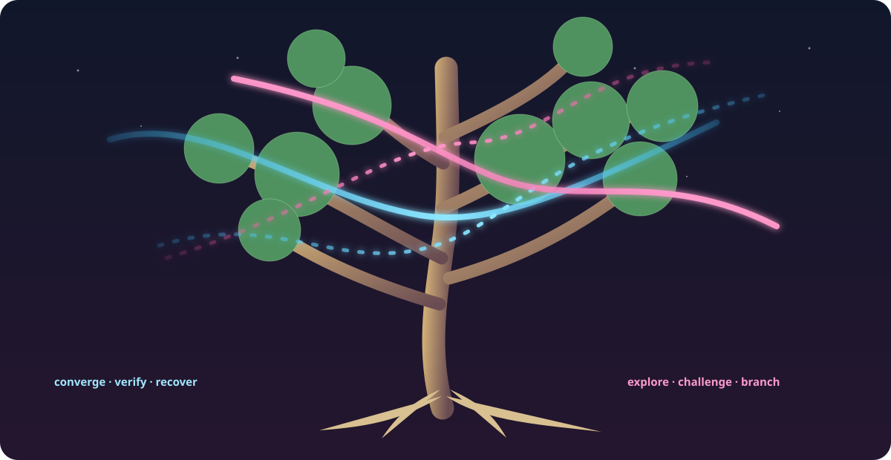
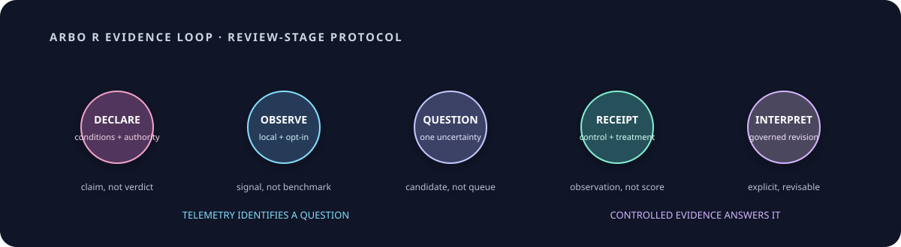

Arbor Opens for Review: A Behavioral Tree Without a Leaderboard
Arbor is opening for review as a new, independent way to read the same Gaia skills. Yggdrasil continues to answer questions of provenance, trust, and prestige. Arbor asks a different question: what does this capability do to an agent's work under stated conditions? The answer must remain inspectable, revisable, and separate from a star count.
This is a review-stage launch. The implementation lanes are open for review and no real benchmark receipt, behavioral verdict, or Arbor profile has been published from a live run. The diagrams in this report describe the protocol; they are not empirical plots.

Figure 1. Arbor is a behavioral lens over the same canonical skill identity—not a replacement ladder.A second question beside the existing Tree
A skill can have strong provenance and still leave an operational question unanswered. Conversely, a low-prestige or newly published skill can exhibit a useful, repeatable behavior in a narrow setting. Those are different statements, and forcing them into one number hides the difference.
| Lens | Question | Source material | What it must not become |
|---|---|---|---|
| Yggdrasil II | What is this skill, how mature is it, and how strongly is its standing supported? | canonical records, evidence artifacts, governance | a behavioral benchmark result by implication |
| Arbor | What behavior does this skill produce under stated conditions? | declarations, runtime observations, focused receipts, interpretations | a second star ladder or Trust Magnitude proxy |
The identity is shared. The interpretation is not. Arbor never rewrites a canonical skill record and rejects stars, rank labels, Trust Magnitude, grades, and prestige vocabulary in its source contracts.
The smallest loop that can learn
The previous temptation was to begin with a broad test matrix. Arbor begins with a question that a decision actually needs answered. The protocol has four records with different jobs.

Figure 2. Telemetry identifies a question; a controlled receipt records the observation; only a governed interpretation changes a behavioral status.| Record | It says | It does not say |
|---|---|---|
| Expert declaration | A named authority judges a skill to have a stated behavioral facet under stated conditions. | The claim is already empirically confirmed. |
| Runtime observation | An opted-in local session exposed a bounded signal worth inspecting. | The session was a benchmark or the skill caused the outcome. |
| Focused receipt | A control and treatment were recorded with pinned task, fixture, evaluator, environment, and provenance. | The measurements automatically prove a threshold. |
| Governed interpretation | A curator explicitly confirms, qualifies, revises, or leaves the claim inconclusive. | The result changes a skill's stars, rank, or Trust Magnitude. |
A declaration can carry both human-led and model-led facets. They are independent, non-exclusive behavioral descriptions: a skill may guide a human choice while also directing a model's procedure. Neither facet is a prestige award.
What “open” means in this launch
The protocol is open for review in the useful sense: its contracts, privacy boundary, and receipt shape are visible for scrutiny. This launch does not yet establish a public receipt-submission path. It also does not mean that arbitrary telemetry becomes public, that every session becomes a test, or that anyone can self-issue a behavioral verdict.
The accompanying Skill Zero implementation is designed to keep telemetry local and opt-in. Its documented boundary includes pseudonymous session identity, exact loaded-skill hashes, coarse composition, outcome/retry/recovery/churn signals, and latency or token values only when the runtime already exposes them; it rejects raw prompts, outputs, credentials, absolute paths, upload, and a background sender.
The consequence is modest but important: unknown remains a valid public state. A missing receipt is not a negative result, and a receipt alone is not a classification.
Start where the decision pressure is real
The first review candidates should be highly visible, disputed, or consequential skills—not a manufactured coverage list. The Matt Pocock collection is a practical starting point for that review. Gaia's current public profile exposes 40 Matt-attributed records and a 5★ capstone collection, while the existing curation report already distinguishes the collection's standing from the varying corroboration of its individual leaves.
That gives reviewers a bounded mapping problem, not a shortcut to a behavioral conclusion:
public source and installation surface
↓
canonical Gaia skill ID + exact content hash
↓
expert declaration under stated conditions
↓
opt-in observation only if use reveals uncertainty
↓
one focused control/treatment receipt
↓
explicit interpretation—or inconclusiveThe review should begin by checking source-to-ID and invocation mappings, choosing one narrow claim, and naming the decision that would change if the claim were false. It should not infer that a 5★ collection is automatically Heaven-native, model-led, reliable in every harness, or behaviorally settled.
A review standard that can say “not yet”
A useful benchmark protocol needs room to refuse escalation. Arbor emits no queue merely because a skill exists. It asks for the cheapest adequate comparison only when use reveals a concrete mismatch, variance, or decision block. A controlled receipt must keep its control and treatment in the same closed environment and pin task, fixture, evaluator, and provenance artifacts.
This makes disagreement legible. A reviewer can challenge the declaration, the use conditions, the observation boundary, the benchmark construction, or the curator's interpretation without having to contest a hidden composite score.
| Review question | Acceptable answer at launch |
|---|---|
| Is the behavioral claim meaningful and conditioned? | Yes, or return it for clarification. |
| Is the observation privacy-bounded and voluntary? | Yes, or do not admit it. |
| Does the receipt isolate one decision-relevant question? | Yes, or redesign it before execution. |
| Does the evidence settle the claim? | confirmed, qualified, revised, or inconclusive—all are legitimate. |
What changes next
Arbor does not ask Gaia to benchmark every skill or every interaction. It creates a narrow route from a contested operational claim to an inspectable answer. As comparable, consented observations accumulate, Gaia can decide which questions are worth a focused test. Only later, if the evidence earns it, can broader behavioral coverage or derived aggregate views emerge.
For now, the work is review: inspect the contracts, challenge the first candidate mappings, and make sure the system keeps prestige, runtime behavior, and raw observations in their proper places.
registry/arbor/README.md (review integration lane).